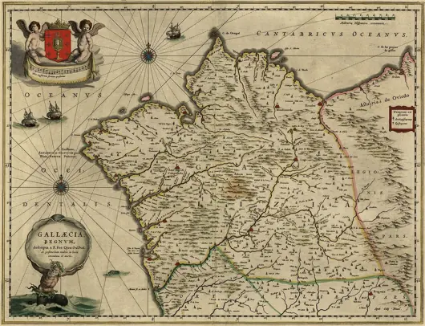
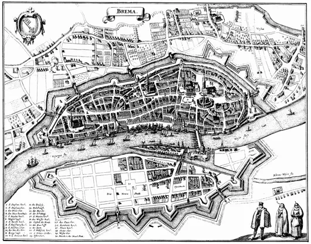

A Brazilian personal archive
Between Continents,
Histories &
Generations.
A personal archive of heritage, faith, history, and intellectual interests.
I’m Brazilian and Muslim. This archive brings together the stories I inherited, the faith I practice, and the subjects I keep returning to.


Family & place
Ancestral Threads

Azorean Portuguese
The Atlantic islands and the maternal lines of Desterro.

Galician
Family memory, language and the northwestern Iberian borderlands.

Germanic · Weber
The Weber surname and German-speaking regional history.

Flemish
The Low Countries and the family’s Flemish-Germanic heritage.

My Charrúa Heritage
Family memory and Indigenous continuity in the Río de la Plata.
Faith & learning
Islam & the
Manuscript Library
I identify with the Athari creed and strive to follow the Salaf al-Ṣāliḥ. The library traces the early generations, classical scholarship and the care with which religious knowledge was transmitted.

Research & interests
From the Archive
Genealogy
Weber, family branches and a regional timeline.
Population Genetics
G25, ancient DNA and the limits of genetic proximity.
Historical Interests
Europe, the Río de la Plata and the classical Islamic world.
Languages
Arabic terminology, Galician and historical Germanic.
Technology
A small web, local AI and computing hardware.
Gaming & Digital Culture
Counter-Strike 2 HvH, Far Cry 3 and the collection.